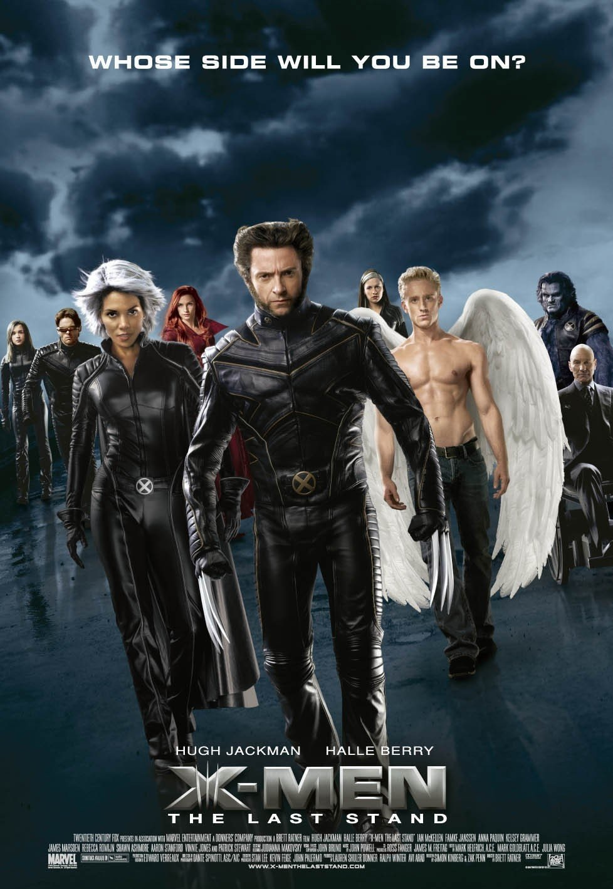

X-MEN

O Encontro: A trama começa com Marie (Vampira), uma jovem que foge de casa após descobrir que seu toque absorve a energia vital dos outros. Ela encontra Logan (Wolverine), um mutante solitário com poder de regeneração e garras metálicas. Ambos são atacados por Dentes-de-Sabre, um aliado de Magneto, mas são resgatados por Ciclope e Tempestade, membros dos X-Men.
O Plano de Magneto: Magneto sequestrou o Senador Kelly para testar uma máquina que induz mutações em humanos normais. No entanto, o processo é falho e mortal. Como a máquina exige muita energia de quem a opera, Magneto planeja usar os poderes de Vampira (através da absorção dos dele) para alimentar o dispositivo durante uma cúpula de líderes mundiais na Ilha da Liberdade, transformando todos os líderes em mutantes.
O Confronto Final: Xavier e sua equipe (Ciclope, Jean Grey, Tempestade e Wolverine) partem para impedir o vilão. Após uma batalha na Estátua da Liberdade, Wolverine consegue libertar Vampira e destruir a máquina. Magneto é preso em uma cela de plástico (onde não pode controlar metal), e Wolverine decide ficar na escola de Xavier para descobrir mais sobre seu passado misterioso.